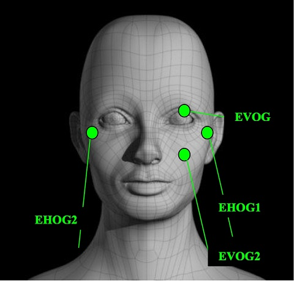
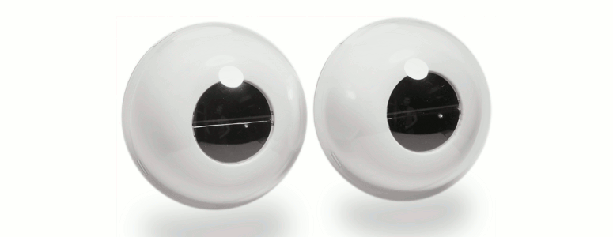
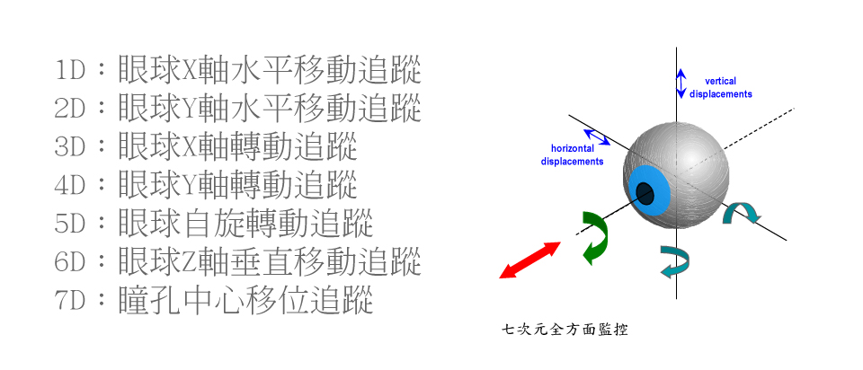
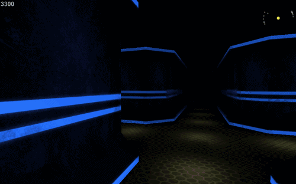
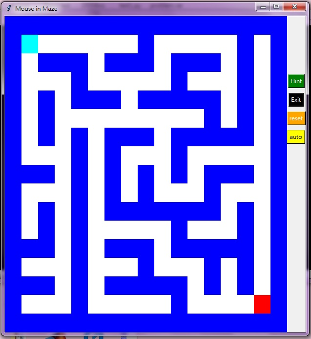

專題報告
眼波控制2D及3D迷宮遊戲
資訊105 羅凱璇
眼波控制裝置
眼電圖法（Electrooculography, EOG）
訊號組合

眼球的肌肉運動會產生不同的訊號
組合出眼球方向

有固定的pattern
缺點
1.有異物接觸
2.需要事前做校正，費時
3.缺乏攜帶性，方便性
追蹤眼球影像
紅外線影像系統法（Infra-Red Video System, IRVS）
眼球往哪移動
直接用影像追蹤
缺點
1.受外界影響非常明顯
2.也容易受到使用者本身影響
3.昂貴，笨重和限制活動範圍
眼動的實驗與驗證
1.眼球注視時間與專注程度及興趣的關聯
2.眼球移動方向、順序與大腦認知、訊息處理的關聯
3.眼球移動與使用情境，自我感受的強烈程度的關聯
2D遊戲

3D遊戲 - 第三人稱

3D遊戲 - 第一人稱
問題
1.哪一個讓人感覺到更強烈的"自我"?
2.哪一個會讓人比較"專注"?
3.不同的視角會讓人的生理訊號和心理產生怎樣的改變?
4.哪一個用眼波控制讓人覺得"自然"
5.也許遊戲的內容才是感受不同的重點
2D 迷宮
code
語言：python
迷宮隨機生成
可遮罩視野
可自由生成場景物件
控制與遊玩方式可由眼動波控制
demo
3D 迷宮
語言：unity 3D
迷宮隨機生成
第一人稱視角
可自由生成場景物件
控制與遊玩方式可由眼動波控制
unity 3D

目標
1.能說服人的數據
2.能應用的結果
3.技術的實作
4.專題的收穫